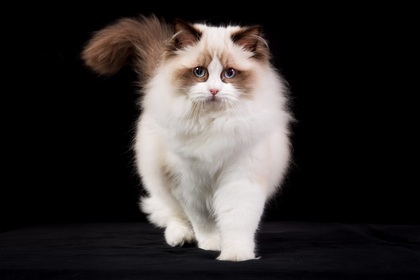

K O T Y 1 0 1
K O T Y 1 0 1

Koty Ragdoll
Duże, masywne ragdolle, z szeroką klatką piersiową, muskularną budową ciała i silnym charakterem,
wyróżniają się przede wszystkim swoim miękkim, jedwabistym w dotyku futrem, z małą ilością przylegającego do ciała podszerstka.
Ragdolle wyglądem przypominają przytulanki, który to efekt potęguje często występujący u nich charakterystyczny kołnierz. Głowa jest średnio duża i przechodzi
od kształtu klinu do zaokrąglenia,
oczy są szeroko rozstawione. Tylne łapy są odrobinę dłuższe niż przednie, co sprawia, że linia grzbietu jest lekko spadzista. Ragdolle to koty średniej wielkości, waga samic dochodzi do 6 kilogramów, natomiast samców do 9,5 kilograma.
Osobnik mierzący w kłębie do 40 cm osiąga długość około 1,20 metra, mierząc od nosa po koniec ogona.
REKLAMA